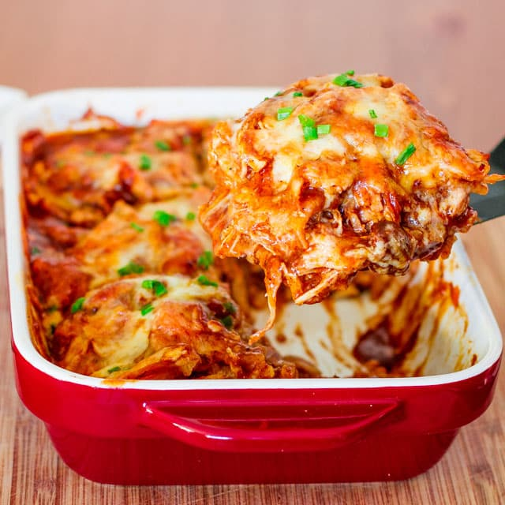

Chicken Enchilada Casserole

I have my aunt to thank for this easy take on enchiladas.
Our chicken enchilada casserole has all the delicous flavor and cheesey goodness of enchiladas without all the work of filling and rolling
each individual enchilada. This recipe always makes the monthly menu in our family.
Ingredients
- 2-3 cooked chicken breasts shredded
- Red enchilada sauce 28 oz
- One brick of cream cheese
- 16 oz bag of Mexican blend shredded cheese
- Package of flour tortillas burrito size
- Can of cream of chicken
- Can of green chiles, drained 8 oz
- Optional - Green onion for garnish
Steps
- Mix cream of chicken, cream cheese, green chiles and the shredded chicken.
- In a casserole dish place 3 tortillas to cover the bottom of the dish. I place one tortilla in the middle
and rip 2 tortillas in half to cover the top, bottom, and sides that the whole tortilla doesn't cover.
- Spread half the chicken mixture to fill the bottom of the casserole dish.
- Pour 1/3 of the enchilada sauce over the chicken mixture, spread it out to cover the whole dish.
- Sprinkle 1/3 of the shredded cheese over the red sauce.
- Repeat steps 2-5 for the second layer of the casserole.
- Place another set of 3 tortillas on top of the second layer.
- Pour the remaining red sauce over the tortilla top.
- Sprinkle the remaining cheese
- Place the casserole in the oven, middle rack, at 350 for 30 minutes until the cheese has completely melted.
- Once done, remove casserole and let it stand for 10 to rest before serving.
- Sprinkle green onion across the top for a fresh garnish, optional.